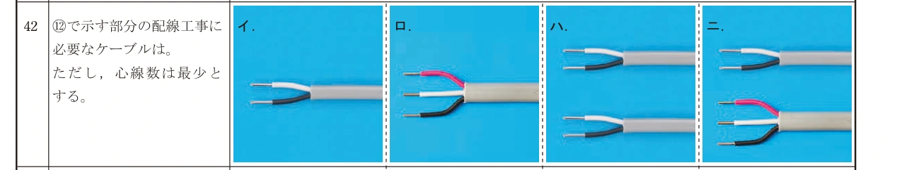
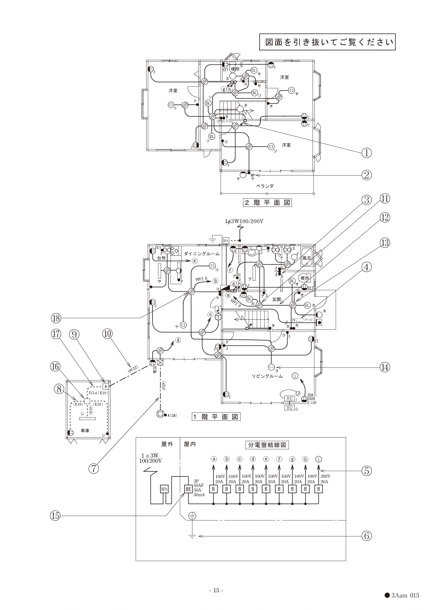

電工二種 令和5年度下期午前 問42
配線図問題

配線図の問題は、共通の図を見て答えます。

正答と解説を見る
正答:ロ
正答はロ。⑫には照明・スイッチの先へ送る非接地側1本、接地側1本、照明カ用スイッチから戻る1本の計3本が通ります。3心ケーブル1本のロを選びます。接地側とスイッチの戻り線を同じ線として扱わないよう、各線のつながる器具を区別します。
確かめた資料:

配線図の問題は、共通の図を見て答えます。

正答:ロ
正答はロ。⑫には照明・スイッチの先へ送る非接地側1本、接地側1本、照明カ用スイッチから戻る1本の計3本が通ります。3心ケーブル1本のロを選びます。接地側とスイッチの戻り線を同じ線として扱わないよう、各線のつながる器具を区別します。
確かめた資料: